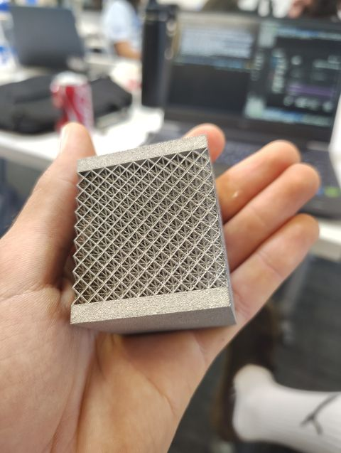
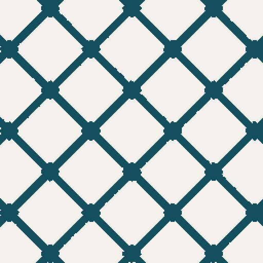
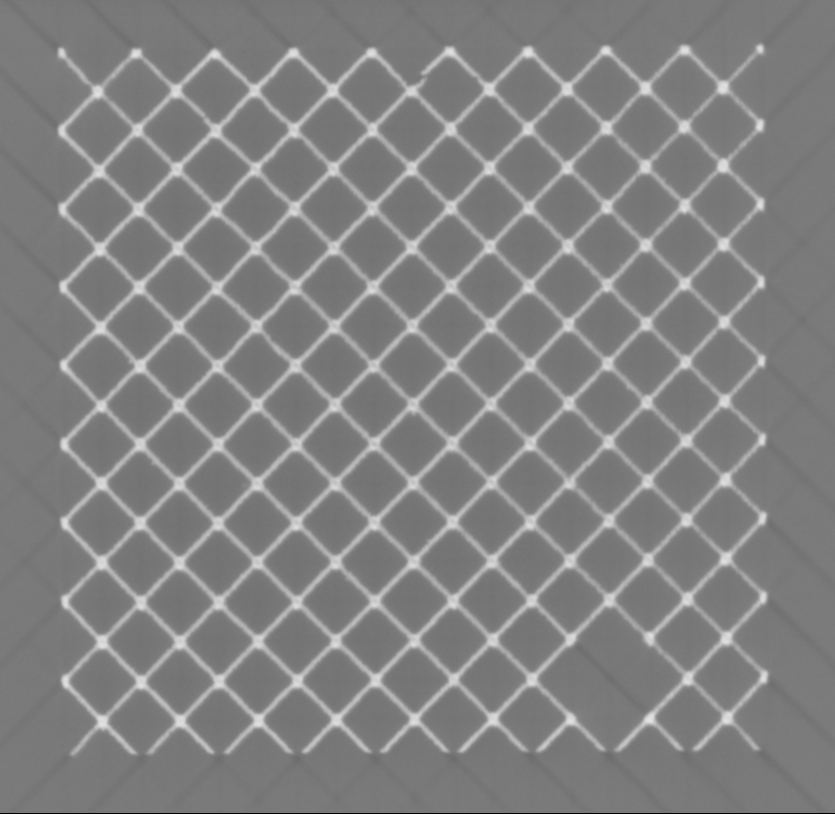
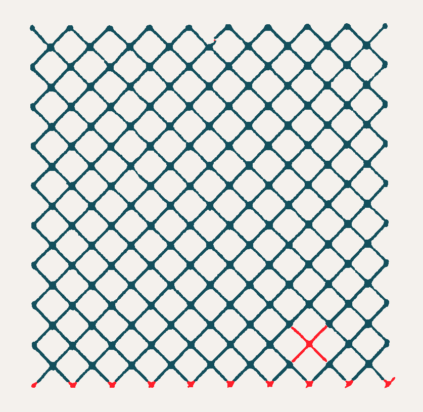
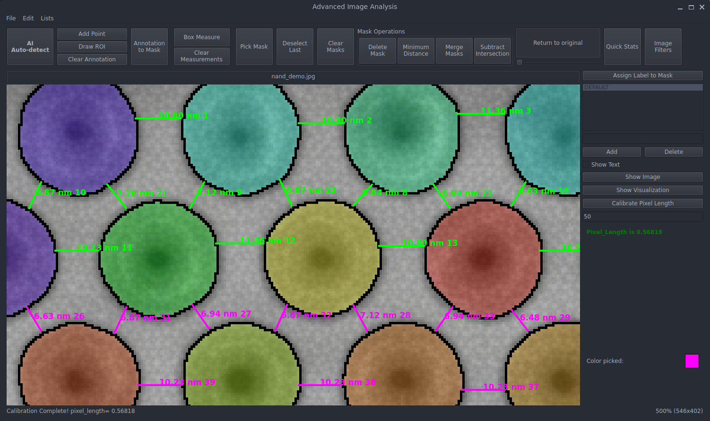
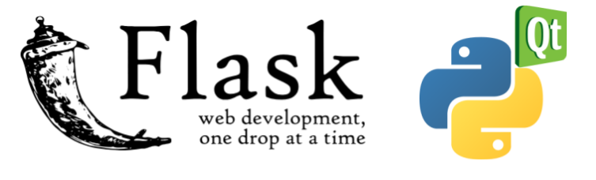
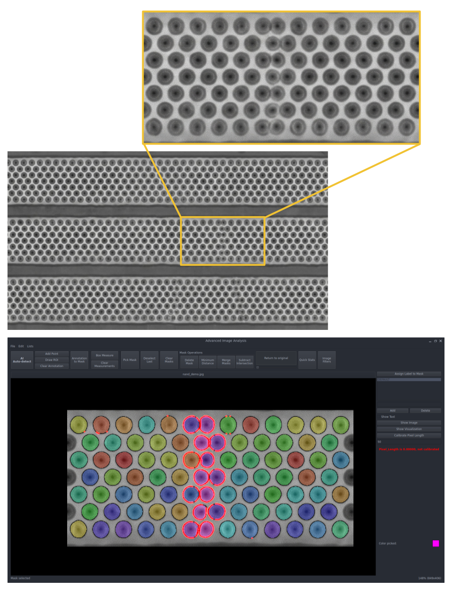
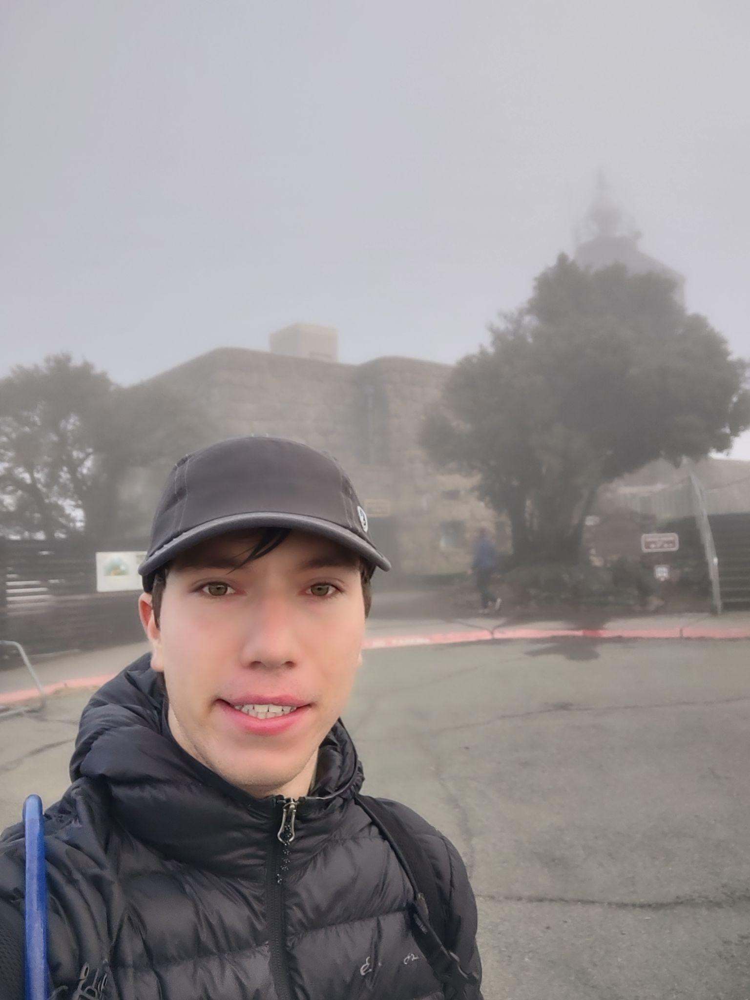

Defect detection using Siamese Res-UNet
Lawrence Livermore National Laboratory (LLNL)
In 3D printing, rarely are parts printed fully solid. Parts printed 100% solid are significantly more expensive to manufacture, weigh more and (often) take longer to manufacture.
Rather than printing an object solid, an infill pattern is utilized to balance weight, costs and structural integrity of the printed part.
This equilibrium is necessary for aerospace applications where weight savings and structural integrity needs to be perfectly balanced for a successful mission.
But, how do you know that a printed part is safe to use when you can only view the exterior surface of the object?
This is where the Data Science Challenge begins. We were given a dataset with STL files and CT scans of printed test objects that had various levels of deliberate defects. Our task was to develop a data pipeline to locate the defects.

Training the model:
For most teams this meant using agentic systems to search each individual edge and vertex in the object.
Our team tested a similar approach and we found it to be time consuming. There are over 18,000 edges in the cube pictured below and for the computer to check each edge / vertex it took over an hour. Afterwards we found that some of the elements flagged missing were caused by alignment issues rather than being actually missing.
Thus, I decided we needed a different solution - Something faster and something that would not fall apart with poor alignment.
After researching various architectures for image segmentation, I implemented a Siamese Res-UNet in PyTorch which is designed to locate differences between images.
I trained the model by generating a Tiff stack from the STL file with no defects. I then randomly sliced sections from the Tiff stack and randomly selected areas to become defective.
Elements that were removed from the Tiff are then saved for calculating error. Finally noise, rotation, translations, and scaling are added to the image to recreate differences between the real CT scan and the tiff stack generated from the STL file.
The model is then asked to locate the defects between the original image and the simulated CT scan images. Since the exact defect locations and predicted defect locations are known, we calculate the error and use Adam to optimize the weights of the model for minimum error.
To fully train the model over 200,000 simulated images were used.


Results:
As a result of the data augmentation approach used to train the model, The model learned to segment key differences like missing struts. At the same time, the model learned to ignore noise, alignment, and scaling issues.
When I used this system to find the defects in the same cube from earlier, inference time took approximately 30 seconds! This is less than 1% of time it took to do the agentic approach.
This provides a more scalable, general, and cost effective framework for finding defects.
Current work and future use cases:
Current work at the Lawrence Livermore National Laboratory has moved beyond verification using CT scans. Today the focus is on verification during the printing process. This has several key benefits which I will list below.
- Verifications happen during printing so there are no post printing steps required saving time.
- No registration/alignment problem as the location and orientation of the object are known.
- Systems that do verification during printing are able to terminate the print early if it is found to be defective.
- Minimize time spent printing parts that are known to be defective.
- Minimize material waste on defective parts.
I believe that this type of pipeline is still very useful for anytime an object needs to be verified multiple times.
This would especially useful with reusable aerospace parts (which are often custom made and 3D printed) where parts need to be inspected multiple times and cleared for reuse. This pipeline could be used to rapidly locate and flag defects during inspections and refurbishment.
Advanced Image Analysis Platform (AIA)
SanDisk

The advanced image platform is an internal tool used by engineers at SanDisk to analyze NAND cell arrays for R&D purposes.
AIA uses SAM (Segment Anything Model) to segment NAND cells.
SAM has multiple modes for segmentation including:
- Automatic segmentation: SAM segments all objects found in the image.
- Box prompt: The user draws a box around the object they want to segment.
- Points prompt: The user marks what areas they want to include and exclude.
Once segmented, engineers can select the objects they want to measure and AIA calculates the location of the optimal measurement. AIA then plots the measurement and records data for future export.
The Stack

- Language: Python
- User Interface: PySide6
- Backend: Flask API - Uses SHA-256 to cache embeddings for rapid response.
- AI Image Segmentation: SAM (Segment Anything)
- Super-Image: AI Upscaling tools.
- Image Manipulation: Numpy & Cv2

Why use SAM?
SAM was chosen as economic alternative to training a custom model.
Training a model requires lots of time, compute, and testing. Using SAM let our team skip these steps and focus on the development of AIA as a platform.
As the name suggests, SAM is designed to "Segment Anything". Normally, segmentation models are trained to only segment specific objects or patterns (for example license plates or faces). Such a model is not adaptable for the variety of analysis tasks AIA is used for.
Using AIA to automatically locate defects in NAND arrays.
AIA is also designed to automatically locate defects by comparing the outer contour of segmented objects.
Take for example the defect shown to the right where several cells appear to be touching.
By comparing the outer contour to an exemplary NAND cell, AIA has located and highlighted areas of substantial deviation.

Joshua Edmon-Macias
Education:
University of California, Merced
Bachelor of Science, Computer Science and Engineering
Applied Mathematics (Minor)
Work Experience:
SanDisk - Software Engineer I
- Contingent Software Engineer at SanDisk employed through Magnit.
- Developed software to analyze SEM imagery of semiconductor products using image segmentation technologies.
- Implemented feature to translate masks generated from AI upscaled ROI for improved segmentation.
- Designed and implemented UI tailored for analysis of SEM imagery by engineers at SanDisk.
- Deployed AI models in Flask Linux server for AIA (Advanced Image Analysis) platform backend.
- Created new “mask analysis” tool for semiconductor defect search/analysis using Machine Learning.
- Decreased image segmentation latency by 97% by caching hashed AI embeddings on the server.
- Added data management tools and data import/export functionality.
- Improved user experience by creating windows installers for AIA and refactored code to enhance stability.
Lawrence Livermore National Laboratory (LLNL) - Data Science Challenge Team Member
- Developed a PyTorch-based Siamese Res-UNet for non-destructive structural integrity verification on laser powder bed fusion 3D-printed components using CT scan.
- Trained custom defect-segmentation model to identify missing internal struts while remaining invariant to alignment shifts, scaling, and imaging noise.
- Delivered a 120x faster defect-detection alternative to agentic baselines and presented final results to LLNL technical staff.
LeetCode
- 100+ LeetCode problems solved.
- 60+ MySQL database problems solved.
- 60+ C++/Python algorithm problems solved.
GitHub
- 300+ Git commits in 2025.
- ≈200 Git commits shipped for AIA.
- 150+ Git commits in 2026.